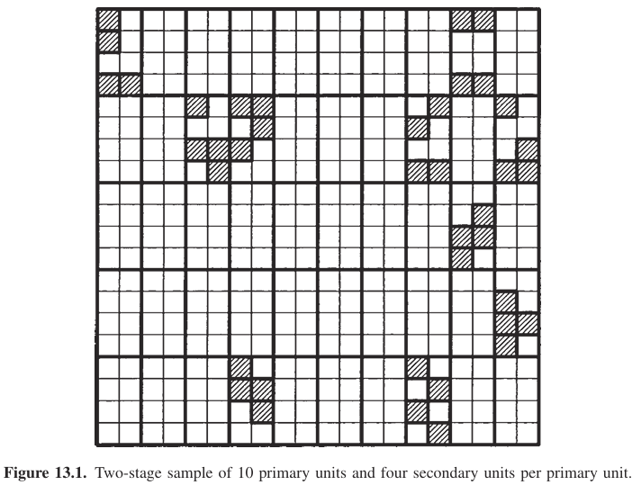

Multi-Stage Sampling
A key fundamental difference from SRS, stratified, or cluster sampling
But also no new principles.
Two-Stage Sampling
Simplest multi-stage / most common

Two-Stage Sampling
Simplest multi-stage / most common
- 1st stage: sample \(n\) primary units (\(N\) = 50; n = 10)
- 2nd stage: for \(i^{th}\) primary unit, select \(m_i\) (not all) secondary units (\(M_i = 8; m_{i} = 4\))
Two-Stage Sampling
Simplest multi-stage / most common
We have two-levels of sampling variation!
- Sampling variation of primary units
- Sampling variation of secondary units within primary units
Multi-Stage Sampling
A generalization of cluster sampling in which selection occurs in two or more successive stages.
- Rather than drawing a sample directly from the population, units are chosen in stages
- larger primary sampling units (PSUs) are selected first, and then
- smaller secondary sampling units (SSUs) are then sampled within them
Multi-Stage Sampling
Allows flexibility
How?
Multi-Stage Sampling
Cost is complexity
- need to consider multiple levels of variance estimates
Example
State of Colorado
- National Forests in CO (PSU)
- Forest mgmt units (SSU)
- measure course woody debris
Example
Western U.S. Grasslands/Praries/Shrublands
- Pronghorn Populations (PSU)
- Individuals (SSU)
- Scat (Tertiary SU)
- Measure forb contents in each scat
Selecting PSUs
- SRS: if no prior information is available
- Stratification: if variables of interest are available (area, measure of variability of interest) then stratify and sample within each stratum
- Systematic: if variables of interest are available, sort by one of these and apply systematic sampling with a random start
- Probability proportional to size: if each primary unit has a known measure of size of importance (based on variables) select units with probabilities proportional to that
Notation
- \(N\) is the number of PSUs in the population
- \(n\) is the number of PSUs in the sample
- \(M_i\) is the number of SSUs in the \(i^{th}\) PSU
- \(m_i\) is the number of sampled SSUs in the \(i^{th}\) sampled PSU
- \(M = \sum_{i=1}^N M_i\) is the number of SSUs in the population
- \(y_{ij}\) is the value for the \(j^{th}\) SSU in the \(i^{th}\) PSU
- \(\tau = \sum_{i=1}^N \sum_{j=1}^{M_{i}} y_{ij}\) is the population total
- \(\mu = \frac{\tau}{M}\) is the population mean per secondary unit
Mean with SRS
Unbiased Mean of primary unit \(i\)
- \(\hat{\mu}_{i} = \frac{1}{m_i}\sum_{j=1}^{m_i} y_{ij}\)
Unbiased Total Population size
- \(\hat{\tau} = \frac{N}{n}\sum_{i=1}^n M_{i} \hat{\mu}_{i}\)
Unbiased Population Mean
- \(\hat{\mu} = \frac{\hat{\tau}}{M}\)
Variance of total population size
partitioning the variance in the nested components
\[
\sigma^2_{\hat{\tau}} =\\ N(N-n)\frac{\hat{\sigma}^2_{\text{Between_PSU}}}{n}\\ + \\\frac{N}{n}\sum_{i=1}^n M_{i}(M_{i}-m_i)\frac{\hat{\sigma}^2_{\text{Within_PSU}}}{m_i}
\]
Side-Bar
Same idea in model-based inference
We observe the weight of the \(i^{th}\) individual pronghorn within the \(j^{th}\) population
\[
\begin{align*}
y_{ij} &= \beta_0 + \mu_j + e_{ij}\\
\mu_{j} &\sim \text{Normal}(\mu_{\text{pop}}, \sigma_{\text{pop}})\\
\epsilon_{ij} &\sim \text{Normal}(0, \sigma_{\text{indiv}})
\end{align*}
\]
Is a hierarchical model or often called a random-intercept model
Cost Evaluation
Basic idea is that we get cost savings by this strategy!
It may be easier or less costly to observe the same number of secondary units (\(m\)) in a cluster than spread out, as in SRS.
Thompson (Ch.13.4) Cost Function:
\[
C_{\text{total}} = c_{0} + c_1n+c_2*nm
\]
assuming the same \(m_{i}\) for each \(i^{th}\) PSU
\(c_{0}\): fixed overhead cost
\(c_{1}\): cost per primary unit selected
\(c_{2}\): cost per secondary unit selected
\(\sigma^2_b\): variance b/w primary units
\(\sigma^2_w\): means variance within primary units (across secondary units)
Cost Evaluation
Minimum value of \(\sigma^2_{\hat{\tau}}\) is
\[
\begin{align*}
m_{\text{optimal}} &= (\frac{c_1\sigma^2_w}{c_2(\sigma^2_b - \sigma^2_w/\bar{M)}})^{1/2}\\
\sigma^2_b &= \frac{\sum_{i=1}^N(\mu_i-\mu)^2}{M-1}\\
\sigma^2_w &= \frac{1}{N}\sum_{i=1}^{N}\sigma_{i}^2\\
\end{align*}
\]